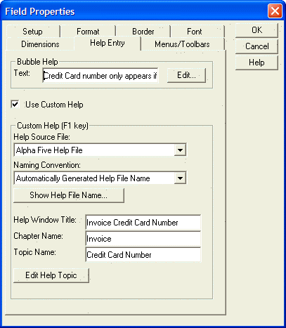
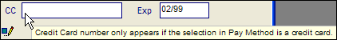
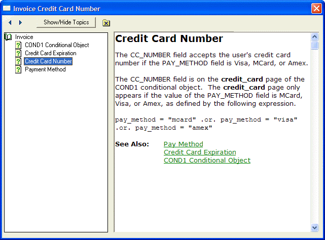

F1 Context Sensitive Help
You can define context sensitive Help for any object on a form or for the form itself. If the user gives focus to a field for which custom Help has been defined, and then presses F1, the custom Help for that object is displayed. However, if no custom Help has been defined at the object level, then the custom Help defined at the form level will be shown. Also, if no object on the form has focus, pressing F1 will bring up the form's Help.
The Help topic can be displayed from a standard Windows Help file (either an old style .hlp file, or a new style .chm file), or it can be displayed from an internal Alpha Anywhere Help file.
External Help files must be created with special Windows Help Editors, such as RoboHelp?. On the other hand, Alpha Anywhere comes with a simple mechanism for creating internal Alpha Anywhere Help files. No third-party editors need be purchased to create an Alpha Five Help file. Alpha Anywhere Help file can include rich text Help entries with hyperlinks.
To set up a Help topic for an object:
Right-click on the object and select Properties....
In the resulting Field Properties dialog display the Help Entry tab.

Define Bubble Help for the object. The Bubble Help appears when the mouse is over the object. Click the Edit button to open a larger text box for editing.

Select the Use Custom Help check box to override the Alpha Five default Help entry and replace it with another.
Use the Help Source File drop-down list to select the source file type (".chm", ".hlp", "A5").
Make a selection in the Naming Convention list.
"User Specified Help File Name" - Select this option and click the Specify Help Name button to select the Help file name.
"Automatically Generated Help File Name" - Select this option and click the Show Help File Name button to view the Help file name.
Enter a custom title for the Help dialog in the Help Window Title.
(Available for Alpha Five Help source only.) Enter the name of the chapter in the Chapter Name field.
Enter the topic name in the Topic Name field.
(Available for Alpha Five Help source only.) Click the Edit Help Topic button to edit the contents of the help topic. The screen below shows the Alpha Anywhere Help File Viewer, with Help for the Credit Card Number field:
